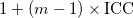
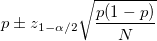
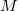
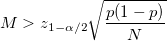
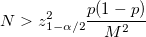

| 心理学のためのサンプルサイズ設計入門 |
| 心理学のためのサンプルサイズ設計入門 |
Journal of Consulting and Clinical Psychology では、APA の Reporting Standards for Research in Psychology に従って無作為化比較試験を行うことが求められている。
事前のサンプルサイズ設計の有無
どのようにサンプルサイズを決定したのか報告
無作為化比較試験における報告ガイドライン CONSORT1 声明でも、サンプルサイズ設計の方法を報告するよう求めている。
無作為化試験は、
優越性試験 superiority trial: どちらの介入のほうが優れているか検証
非劣性試験 non-inferiority trial: ある介入が他の介入よりも明らかに劣ることがないことを示す2
非劣性マージンを設定
有意差がない or CIが非劣性マージンに収まれば、非劣性と判断
同等性試験 equivalence trial: 複数の介入の間に効果の違いがないことを示す
同等性マージンを設定
CIが同等性マージンに収まれば、同等と判断
に分類できる。
Hislop et al. (2014)3 による分類
重要な差 important difference: 治療者や患者が実際に差を感じるような意味付けのなされた差
アンカー: Global Rating Scale などの外的基準
分布: 測定誤差を超えるさを重要な差とするなど
医療経済学: 治療にかかるコストに見合うアウトカムが得られるか
標準化効果量: Cohenのカットオフなど
現実的な差 realistic difference: 過去の研究における群間差を参考
パイロット研究: エビデンスがない場合に現実的な差を検討
いずれにも該当するものとして、意見聴取、エビデンスの展望、がある。
クラスター無作為化試験において必要となる  を、完全無作為化試験において必要となる を pwr パッケージの pwr.t.test() 関数で求めたのち、
を、完全無作為化試験において必要となる を pwr パッケージの pwr.t.test() 関数で求めたのち、
|  |
をかけて求める。[5]
ICCは級内相関係数で、不明な場合は0.05と設定されることが多い。
RのTrialSizeパッケージのTwoSampleMean.NIS()関数を用いる。
母比率の信頼区間
|  |
から、目標とする信頼区間の半幅をとし、
|  |
より
|  |
としてサンプルサイズを求める。
Footnotes
| 心理学のためのサンプルサイズ設計入門 |